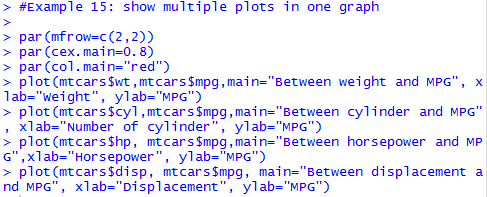
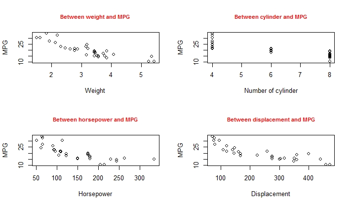

Identify global setting and local setting for a plot
Introduction
The par() function allows us to set up many useful functions globally to be applied to all subsequent plots until we change it. The function par with argument mfrow allows us to set up multiple graphs in one plot.
Knowledge
The syntax of the function par() is
par(mfrow=c(x, y))
plot(…)
Viewing multiple plots in one graph help to see the differences between datasets, similarities between datasets, different views of the same dataset, and relationship between different variables of a dataset.
Other functions that can be set up globally using par() are all characteristics for a plot, such as cex for point size, pch for point type, and lty for line type, etc. (see more details of the characteristics in the locally setting section below).
The function dev.off() is to turn off the global setting. If you have applied any global settings from previous commands, state “dev.off()” at the beginning of the new script removes all previous global settings.
Key Points to Remember
To plot several graphs in one chart, use the R function par(mfrow=c(x, y)). To turn off the global setting of doing multiple plots in one chart, use the R function dev.off().
Practice and Reflection
Practice
Example 2: Use the R dataset mtcars to show four scatter plots in one graph as a 2 by 2 matrix: 1) a scatter plot between weight (wt) and miles per gallon (mpg); 2) a scatter plot between cylinder (cyl) and mpg; 3) a scatter plot between gross horsepower (hp) and mpg; 4) a scatter plot between displacement (disp) and mpg. Make the size of all titles as 0.8 and red.
The R code is

The output graph is shown in figure 3

Figure 3. Showing multiple plots in one graph with global setting of title size and color.
Reflection
Activity 2: Use the R data set iris to generate two scatter plots in one graph and show the two plots side by side: 1) a scatter plot between sepal length and sepal width; and 2) a scatter plot between petal length and petal width. Make the two plots blue.Assessment
Use the mtcars data in R to generate a box plot and a bar plot in one graph using mfrow(). The boxplot shows the five number summary of mpg for each number of cylinders and the bar plot shows the mean values of mpg for each number of cylinders. Label the x-axis Number of cylinders. Title each plot.